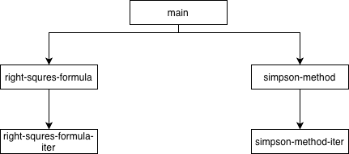
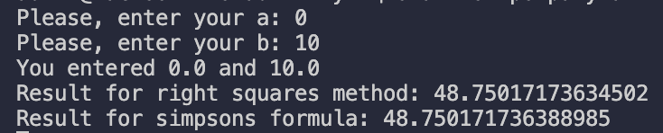

Мета: Розв’язати нелінійні рівняння та здійснити чисельне інтегрування функцій наближеними методами, використовуючи мови функціонального програмування та lambda, let та set! форми.
Умова:
6.1 Написати програму мовою Scheme для пошуку коренів нелінійного рівняння двома методами: методом хорд (chord method) та методом простої ітерації (simple iteration method або fixed-point iteration) на інтервалі [a, b]. Порівняти результати розв’язків двома методами.
Завдання
- задати значення a, b меж інтервалу з клавіатури;
- задати значення точності розрахунку коренів (10-3 – 10-6)
- реалізувати чисельне розв’язання рівняння методом хорд;
- реалізувати чисельне розв’язання рівняння методом простої ітерації;
- у випадку відсутності на заданому інтервалі коренів вивести відповідне повідомлення;
- передбачити виведення проміжних ітерацій за вимогою користувача;
- порівняти результати чисельного розв’язання рівняння за точністю (наприклад, 10-6) та швидкістю збіжності (кількість ітерацій або кроків для досягнення результату);
- у звіті намалювати графік функції з відображення кореня рівняння.
6.2 Написати програму мовою Scheme для обчислення визначеного інтегралу функції на відрізку [a, b] двома методами: методом правих прямокутників і методом Сімпсона. Порівняти результати обчислення.
Завдання
- задати значення a, b меж відрізку з клавіатури;
- задати значення точності інтегрування (10-3 – 10-6);
- задати значення n кількості розбиття відрізку інтегрування [a, b];
- реалізувати чисельне інтегрування методом правих прямокутників;
- реалізувати чисельне інтегрування методом Сімпсона;
- процедури чисельного інтегрування мають приймає в якості аргументів функцію f, межі відрізку a, b, кількість інтервалів розбиття n, та повертати значення інтегралу;
- розрахувати «точне» значення інтегралу одним із методів з дуже малим кроком, наприклад, 10-10;
- визначити похибку обчислення інтегралу методом правих прямокутників як абсолютну різницю між наближеним і «точним» значеннями інтегралу;
- визначити похибку обчислення інтегралу методом Сімпсона як абсолютну різницю між наближеним і «точним» значеннями інтегралу;
- порівнявши похибки, визначити, який метод більш ефективний (точний).
Аналіз:
1. Завдання передбачає реалізацію методів хорд та простої ітерації для знаходження коренів на інтервалі [a, b] з точністю 10⁻³–10⁻⁶. Програма повинна приймати від користувача межі інтервалу та точність, передбачати виведення проміжних ітерацій за вимогою, перевіряти наявність коренів у заданому інтервалі і повідомляти про їх відсутність, а результати порівнювати за швидкістю збіжності (кількістю ітерацій) та точністю, додатково відображаючи графік функції з позначеним коренем.
2. Завдання передбачає чисельне інтегрування функції на відрізку [a, b] методами правих прямокутників і Сімпсона з точністю 10⁻³–10⁻⁶ та кількістю розбиття n. Програма повинна приймати від користувача межі інтегрування, n та точність, реалізувати обидва методи інтегрування, обчислити «точне» значення інтегралу з дуже малим кроком для оцінки похибки, а потім порівняти обчислені значення та похибки, визначаючи, який метод є більш ефективним і точним.
Блок-схема:


Код лабораторної работи:


Прикради виконання:


Первірка розрахунків:
1.
2.  Аналіз коду методами штучного інтелекту:
Аналіз коду методами штучного інтелекту:
1. Ваш код реалізує два чисельні методи для знаходження коренів функції f(x)=0: метод Горде (схожий на метод січних) і метод простої ітерації (fixed-point). Користувач вводить інтервал [a,b][a, b][a,b] і може обрати, чи показувати проміжні результати ітерацій. Код загалом структурований і працює для базових випадків, використовуючи рекурсивні функції для ітерацій.
Функція func коректно задає цільову функцію, а horde-func правильно реалізує формулу для обчислення наступного наближення методом Горде. Проте phi-func може породжувати комплексні числа, якщо вираз під квадратним коренем стане від’ємним, що може призвести до помилок під час виконання. Також has-root реалізований некоректно — умова < (func a) (func b) 0 не перевіряє наявність кореня на проміжку.
Методи ітерації та Горде реалізовані рекурсивно, і є окремі версії для відображення проміжних результатів. Код взаємодіє з користувачем через консоль і має базові перевірки для вхідних даних, хоча перевірка на числовий тип дещо неточна (вимагає числа з плаваючою комою). Загалом, структура зрозуміла, але можна додати перевірку домену для phi-func та виправити has-root для правильної логіки.
2. Цей код на мові Racket добре демонструє класичні чисельні методи інтегрування – метод правих прямокутників і метод Сімпсона – на прикладі функції [a,b] з різною кількістю розбиттів і перевірку парності інтервалів для формули Сімпсона, що показує уважність автора до математичних деталей. Використання рекурсивних функцій для адаптивного збільшення числа інтервалів до досягнення заданої точності eps є правильним і демонструє розуміння принципів чисельного аналізу.
Інтерактивна частина коду, де користувач вводить межі інтегрування, і перевірка правильності введених значень – це позитивний аспект, який робить програму більш надійною та зручною для користувача. Обчислення «точного» результату для дуже малого eps і порівняння з наближеними результатами дозволяє оцінити точність методів, що є важливою практичною перевіркою ефективності чисельних алгоритмів.
З точки зору оцінки, код є функціонально повним і коректно реалізує поставлені завдання, але його можна покращити щодо стилю і структури: використання set! для зміни змінних у Racket можна уникнути, а перевірки введених даних можна зробити більш гнучкими, наприклад, дозволяючи дробові значення. Загалом, це хороший приклад лабораторної роботи з чисельного інтегрування з практичною перевіркою точності та порівнянням методів.
Висновок:Лабораторна робота показала практичне застосування чисельних методів для розв’язання конкретних задач: пошуку коренів нелінійних рівнянь і обчислення визначених інтегралів. Було реалізовано метод Горде та метод простої ітерації для знаходження коренів, а також метод правих прямокутників і формулу Сімпсона для інтегрування, включно з адаптивним підбором числа інтервалів для досягнення заданої точності. Це дозволило порівняти швидкість збіжності та точність різних методів.
Інтерактивна частина роботи, де користувач вводить межі обчислень та точність, дала можливість оцінити коректність алгоритмів на різних прикладах. Крім того, реалізація рекурсивних функцій для ітерацій та адаптивного збільшення числа розбиттів підкреслює правильне використання функціонального підходу в Racket і дозволяє простежити проміжні результати для аналізу збіжності.
Результати показали, що метод Сімпсона загалом дає меншу похибку при меншій кількості ітерацій порівняно з методом правих прямокутників. При цьому код потребує невеликих поліпшень: точніша перевірка коренів для методу Горде, уникнення можливих комплексних результатів у phi-функції та більш гнучка перевірка введених даних. Загалом, лабораторна робота ефективно демонструє застосування чисельних методів і дозволяє робити висновки про їх точність і практичну ефективність.
Menu